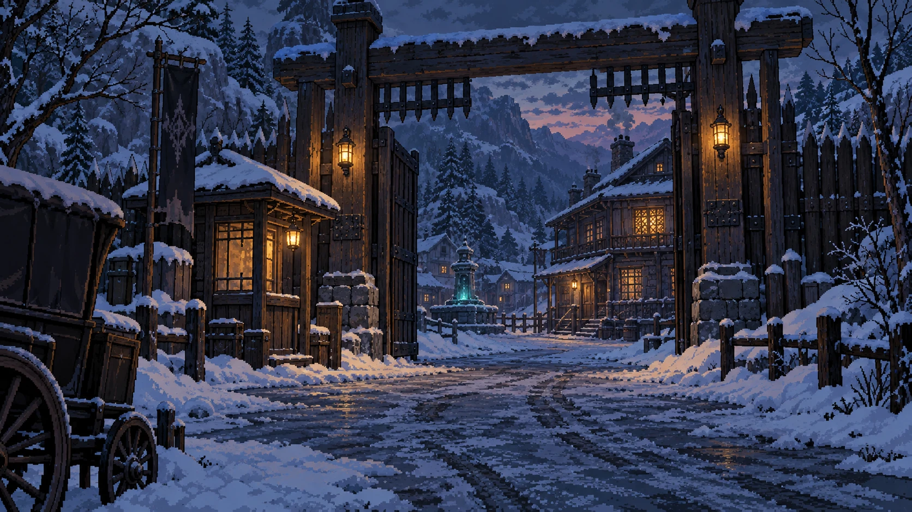
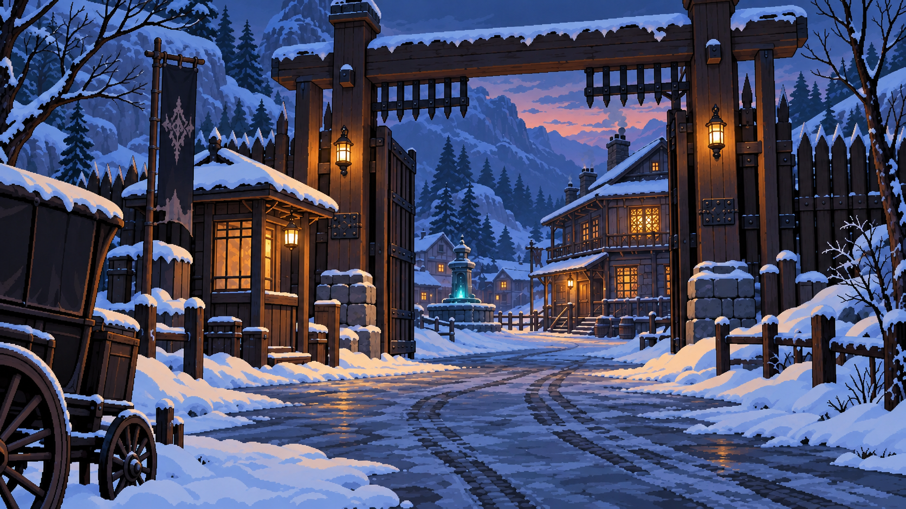
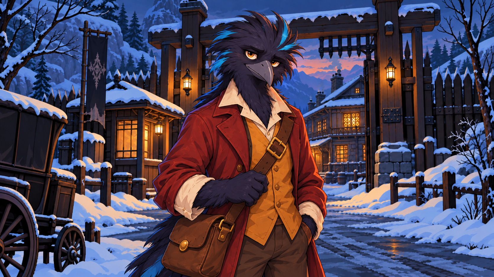
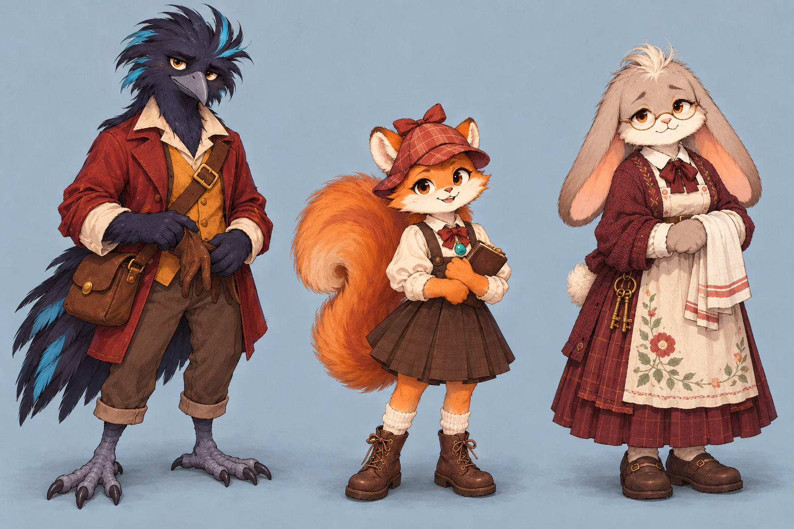

다람탐정 · 시안과 기획 자료
2026년 10월 12일 · 기존 배경의 잔무늬를 줄인 비교 시안입니다. 새 그림은 게임에 적용하지 않았습니다.
ZIP에는 시안, 엑셀, 보고서와 실제 게임의 엔딩 화면이 포함됩니다. 엔딩 화면은 상태를 설정한 검토용 촬영이며 신규 전용 CG가 아닙니다. 보고서 속 앞선 겨울 배경 2종은 채택되지 않은 초안입니다.
기존 마을 입구

내부 잔무늬를 줄인 시안
배경 원본 저장
캐릭터와 배경 조합
조합 시안 저장
캐릭터 3종
캐릭터 원본 저장